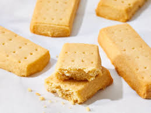

Shortbread

Definitely the best shortbread in the world!
This receipe will show you how to make the best shortbread in the entire world! (Seriously!)! Enjoy!
Ingredients
- 125g/4oz unsalted butter, softened
- 55g/2oz caster sugar, plus extra to finish
- 180g/6oz plain flour
Directions
- Preheat the oven to 190C/170C Fan/Gas 5.
- Beat the butter and the sugar together until smooth.
- Stir in the flour to get a smooth paste. Turn on to a work surface and gently roll out until the paste is 1cm/½in thick.
- Cut into shortbread rounds or fingers and place onto a baking tray. Sprinkle with caster sugar and chill in the fridge for 20 minutes.
- Bake in the oven for 15–20 minutes, or until pale golden-brown. Set aside to cool on a wire rack.